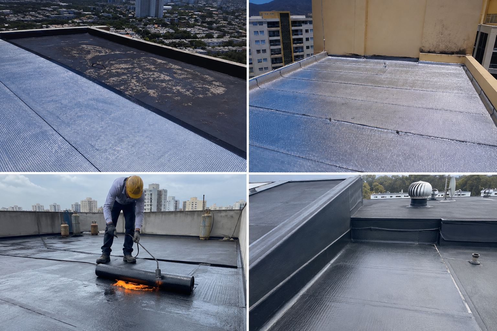

Santa Marta, Magdalena
Solicitar cotización →
OCA Servicios Integrales S.A.S. · NIT 900.413.290-7

Gestión integral de obras de ingeniería civil y servicios especializados, con más de una década de experiencia en Santa Marta y el Caribe colombiano.
Contamos con profesionales calificados y los recursos técnicos para ejecutar obras civiles, urbanismo, instalaciones y acabados con los más altos estándares de calidad.

 Antes
Antes
Diseño arquitectónico, estructural, hidráulico y de vías para proyectos residenciales, comerciales e institucionales, con estudios de viabilidad y acompañamiento técnico en cada etapa.

 Antes
Antes
Construcción de estructuras metálicas para edificaciones, bodegas, cubiertas y carpintería metálica, con fabricación y montaje certificado.

Construcción de redes de alcantarillado e hidráulicas, registros de inspección (manjoles) y estructuras para el manejo de aguas lluvias.

Instalación de redes hidráulicas y sanitarias, con suministro de macromedidores y micromedidores y cumplimiento de la normatividad vigente.

Diseño e instalación de sistemas contra incendios para proteger vidas y bienes: redes de hidrantes, gabinetes, rociadores y estaciones de bombeo, cumpliendo la normatividad vigente.

 Antes
Antes
Pavimento rígido y pavimento articulado (adoquín) para vías urbanas, accesos y zonas de tránsito vehicular, con preparación de subbase y nivelación.

Impermeabilización de cubiertas y zonas comunes para proteger las edificaciones de filtraciones y humedad, con tratamiento y sellado de superficies.

Levante de muros, pañete, estuco, pintura, acabados y mantenimiento de fachadas de edificios, además de remodelaciones y adecuaciones.

Servicio especializado de mantenimiento correctivo y preventivo de aires acondicionados, residenciales, comerciales e industriales, con atención 24/7.
Acompañamos cada proyecto desde el diagnóstico hasta la entrega final, con transparencia y calidad en cada etapa.
Diagnosticamos tus necesidades y evaluamos técnicamente el alcance de tu proyecto.
Elaboramos propuestas, diseños y presupuestos detallados a la medida de cada necesidad.
Desarrollamos la obra o el servicio con personal calificado y cumplimiento de normatividad.
Entregamos con calidad certificada y acompañamiento posterior a la finalización.
Cuéntanos qué necesitas y te presentamos una propuesta a la medida, con respuesta rápida y asesoría personalizada.